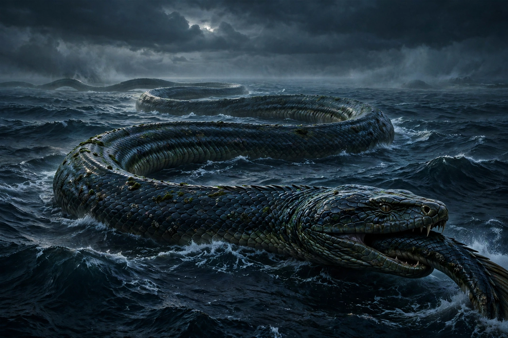

From Wikipedia, the free encyclopedia
| Jörmungandr | |
|---|---|
| Affiliation | Norse mythology; the World Serpent |
| Parents | Loki and Angrboða |
| Siblings | Fenrir, Hel |
| Domain | The ocean encircling Midgard, biting its own tail |
| Fate | To fight Thor at Ragnarök; each kills the other |

Jörmungandr (Old Norse Jǫrmungandr, "huge monster"), also called the Midgard Serpent, is the enormous sea serpent of Norse mythology who encircles the world, grasping his own tail. Child of Loki and Angrboða, brother of Fenrir and Hel, he was cast by Odin into the ocean, where he grew so large that he surrounded all the earth. When he lets go his tail, Ragnarök begins; in the last battle he will crawl ashore, flooding the land, to fight his ancient enemy Thor — who will kill him and walk nine steps before falling dead of his venom.
The serpent's great myth is a fishing trip. Thor rowed out with the giant Hymir, tore the head off Hymir's best ox for bait, and hooked Jörmungandr from the deep; as the serpent rose, Thor's feet went through the boat's bottom and braced against the sea floor, and god and serpent glared at each other — a scene carved on picture stones and told in Hymiskviða — until Hymir, terrified, cut the line. A later prose tale has Thor, challenged in Útgarða-Loki's hall of illusions, fail to lift a giant cat — and learn afterwards that the "cat" was Jörmungandr himself, and that he had raised the serpent so high the giants shook: one of mythology's great near-misses.
As an ouroboros — the serpent eating its tail — Jörmungandr belongs to a worldwide family of world-encircling serpents, and to scholars he marks the boundary of the ordered world: the sea as the rim of chaos, held in a ring only until the end. His rising at Ragnarök, when the sea floods the land, is the boundary dissolving.
Norse mythology · Fenrir · Loki · Thor · Odin